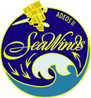

Measuring Ocean Winds from Space
Wind is a key to understanding our environment. The SeaWinds missions provide long-term, high-resolution, ocean-surface wind data (both speed and direction) used for studies of ocean circulation, climate and air-sea interaction. These measurements are crucial to understanding and predicting severe weather patterns and climate changes. SeaWinds is a radar instrument that sends pulses to the ocean surface and measures the echoes called backscatter, that bounce back to the satellite.
Computer Animation of QuikSCAT
 Check out the new video clip (in QuickTime movie format) of SeaWinds on QuikSCAT, showing solar array deployment and instrument observation paths over the earth's oceans. Two versions are available; 1.6 meg (approximately 5 minutes at 28.8 kps), and 16.3 megs (recommended 56k or higher connections).
Check out the new video clip (in QuickTime movie format) of SeaWinds on QuikSCAT, showing solar array deployment and instrument observation paths over the earth's oceans. Two versions are available; 1.6 meg (approximately 5 minutes at 28.8 kps), and 16.3 megs (recommended 56k or higher connections).
 Interpolated animation of global winds as viewed from the SeaWinds instrument on August 1, 1999. Two versions are available; 1.6 megs (approximately 3 minutes at 28.8 kps), and 3.3 megs (recommended 56k or higher connections).
Interpolated animation of global winds as viewed from the SeaWinds instrument on August 1, 1999. Two versions are available; 1.6 megs (approximately 3 minutes at 28.8 kps), and 3.3 megs (recommended 56k or higher connections).